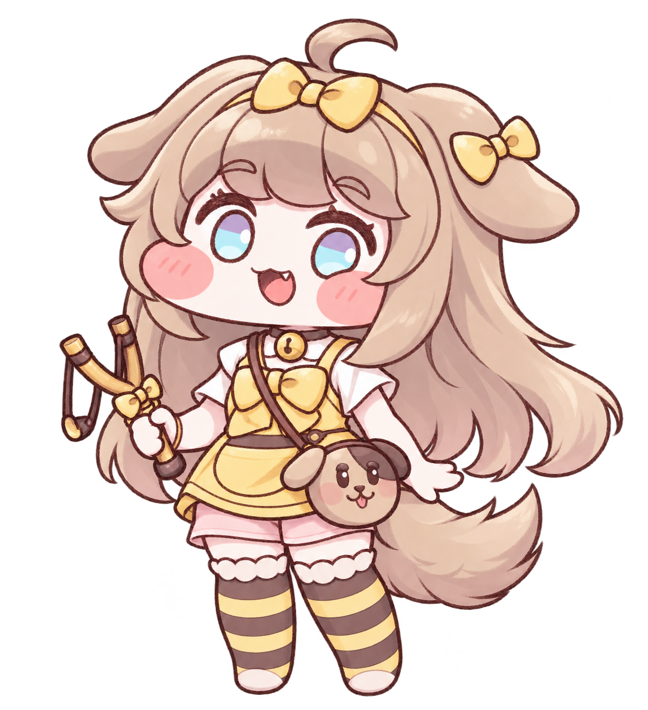
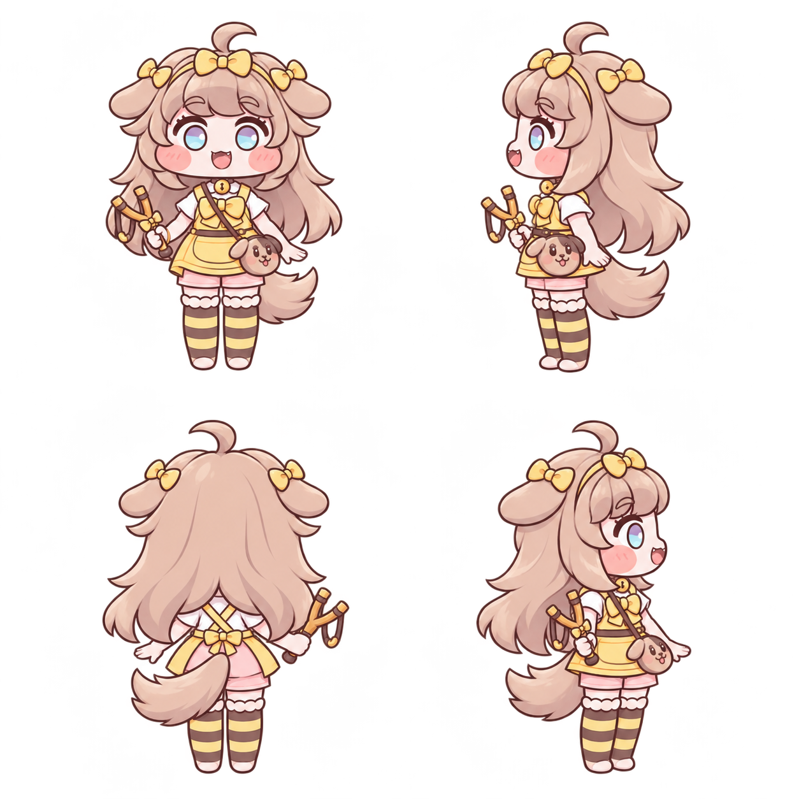

왼쪽은 네가 좋다고 했던 2D 원본이고, 오른쪽은 그 이미지를 직접 참조한 새 정지 에셋이야. 원본은 그대로 보존하고, 새 후보는 별도 버전으로 관리해.

에셋을 불러오는 중…
이번 후보는 정지 모습 네 장이야. 원본과 비교해 얼굴·옆머리·채색·측면 소품을 확인하는 단계이며, 걷기·사격 애니메이션이나 기존 게임은 아직 교체하지 않았어.
저장소의 작업 규칙과 기준 문서에 남겼어. 파일 검사는 원본 변경과 잘림을 잡고, 실제 닮은 정도는 원본과 후보를 보고 확인해.
4방향 투명 PNG프레임 좌표·발 기준점고정 특징·수정 이력다음 작업용 규칙게임
승인 PNG의 내용이 바뀌면 저장소 검사에서 알려줘.
